RECEIVE-CONTROL-1 — full-throttle receiving and turning first touches
18 Oct 2026 · prototype/dribble-1 · an adapter on the frozen DRIBBLE-V1 (tag dribble-v1-foundation-1, unchanged) · local review page (real player names) · the full report is review_artifacts/receive1/RECEIVE1_REPORT.md
- All the behaviours asked for exist and are deterministic: ordinary receives into stride, turning first touches both ways, a 180° turn taken with the first touch, through- and across-body redirections, heavy and failed receives.
- Reliability is not foundation-level yet: 279 of 714 representative runs clean (39 %), 213 missed (30 %). The main limits are in the frozen dribble contact model meeting a hard incoming ball (the report, §12 and §15).
- CPU in the receive phase: 816.4 ms per simulated second on average (≈ 1.3 s per receive); after the handoff 128.2 ms/s (DRIBBLE-V1's own).
I cannot play video in real time: every judgement on this page comes from frame strips and stills. Each case: the gameplay camera zoomed 2.6× (1×), a close top view with diagnostics (0.5×) and a close side view around the contact (0.25×). The overlays show the passer, the requested exit with its receiveTurnAngle, and the first touch (foot, surface, role, ball speed in → out, its direction, the exit error and how far the body had turned).
Visual cases
A — ordinary forward receive · R_0_RUN_MED
Pass from the right to a running receiver, exit straight on. Left inside across the body (6.9 → 6.8 m/s), 2° off the exit. The approach slowed him to 3.1 m/s to time the meeting; back at 5.5 m/s a second later.
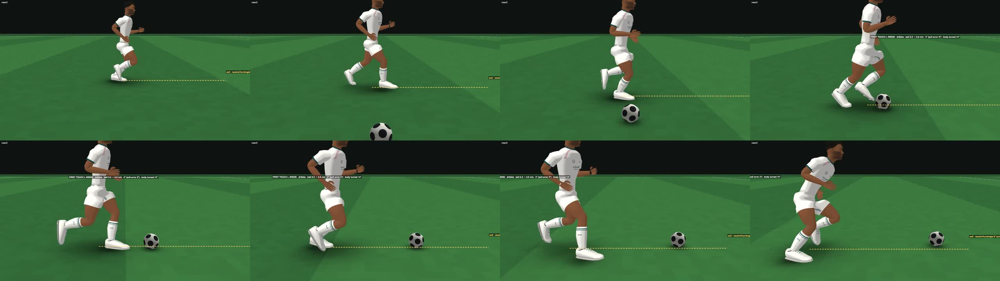
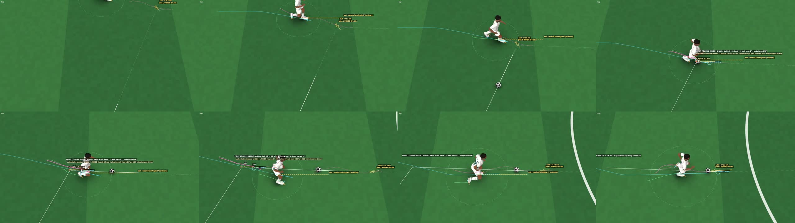
A′ — ordinary receive at running pace · F_315_RUN_MED
Pass from the front, exit 45° left. The outside of the left foot redirects the oncoming pass (9.2 → 6.4 m/s) 8° off the exit, in stride at 5.5 m/s.
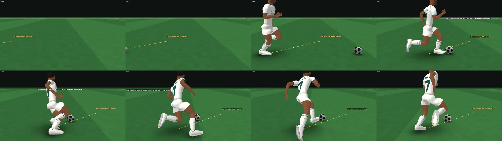
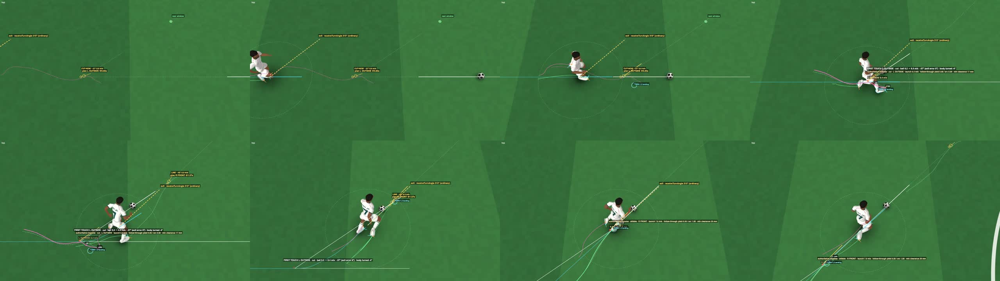
B — 120° turning receive (right) · FR_120_RUN_MED
The turn is released 0.34 s before contact. The right outside reaches for the pass and kills its pace (8.5 → 2.9 m/s), sending it out at 93° (27° short); the body keeps turning and is on the 120° line 0.97 s later.
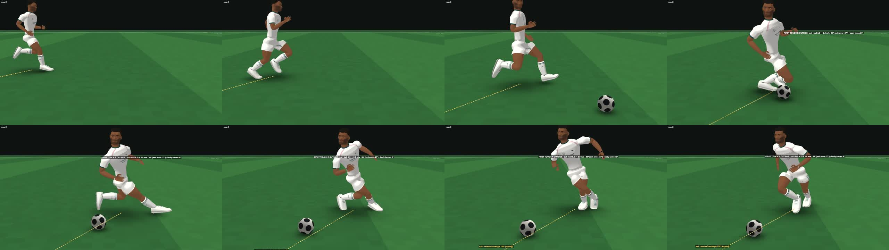
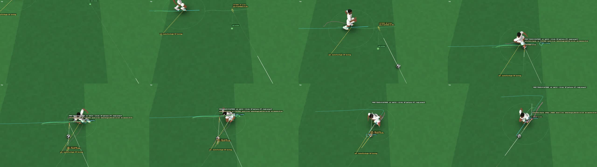
C — 180° turn first touch · R_180R_JOG_SOFT
The turn starts 0.33 s before the ball arrives; at contact the body is 92° round (its speed at the bottom of TURN-1.2's pivot, 0.6 m/s). The left laces send the ball out at 172°, 8° off the exit, and he runs on with it — 5.3 m/s a second later.
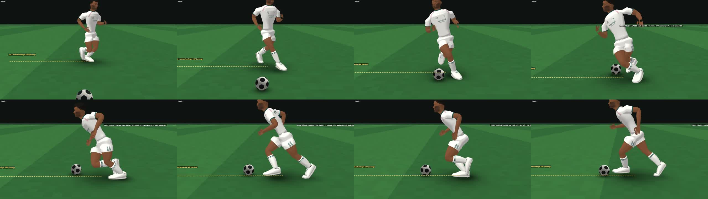
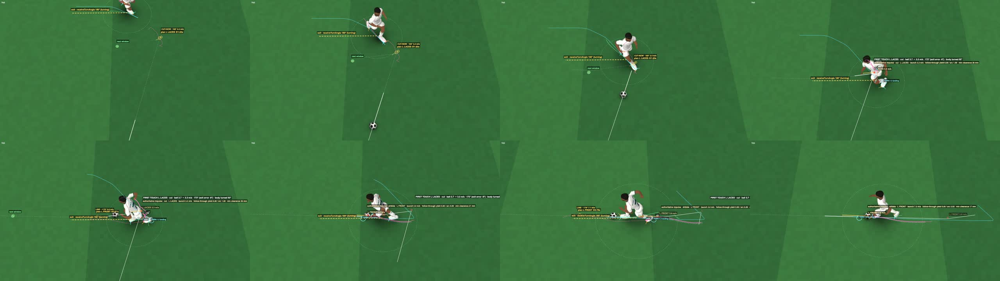
D — the opposite side (120° left) · FL_240_RUN_MED
B mirrored: the right inside takes the ball across the body (8.5 → 3.7 m/s) to −85° for a −120° exit; new line 0.93 s later.
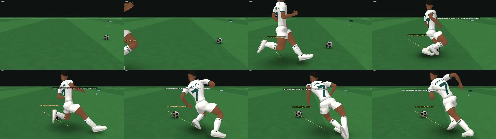
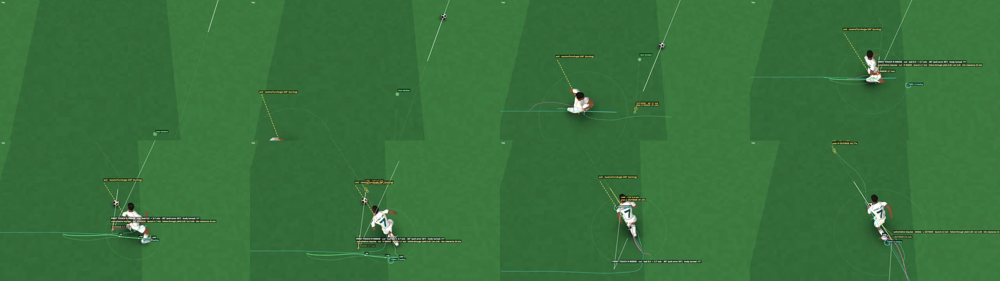
E — through-stance turn (90° left) · FL_270_RUN_MED
The right foot's inside meets the ball behind the standing left leg (8.6 → 5.5 m/s), sending it to −66° for a −90° exit, and he turns away with it. Chop-like in function; nothing is scripted.
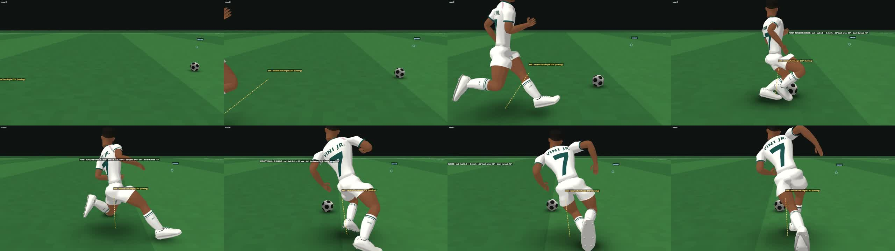
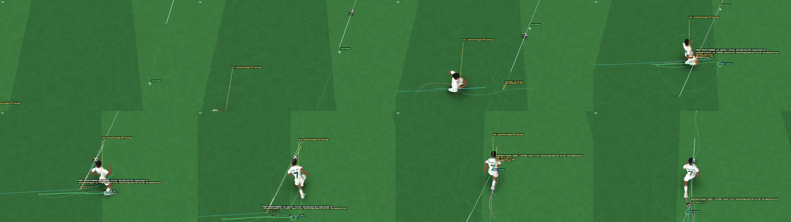
F — failed / heavy receive · F_180R_RUN_MED
Head-on pass, 180° wanted. No valid turning plan; the frozen recovery block with the left toe (9.2 → 9.7 m/s) sends it straight back toward the passer; control is lost 0.13 s later.
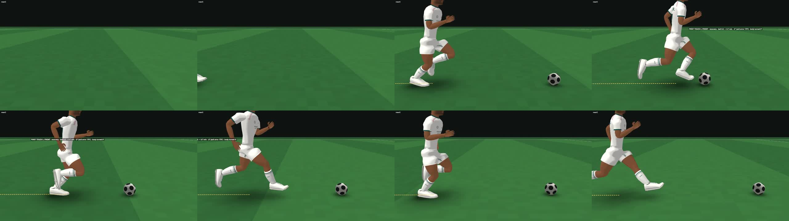
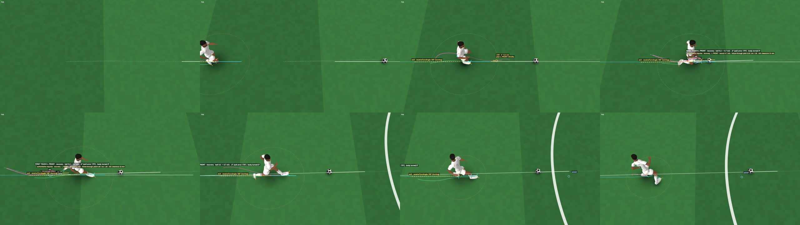
+ full throttle — 90° left from 7.8 m/s · L_270_FAST_MED
TURN-1.2 brakes to 4.9 m/s for the turn; a right inside wrap with the body 89° round, 2° off the exit; on the new line at once and back at 7.8 m/s a second later. (The close view clips into his back in its first frames.)
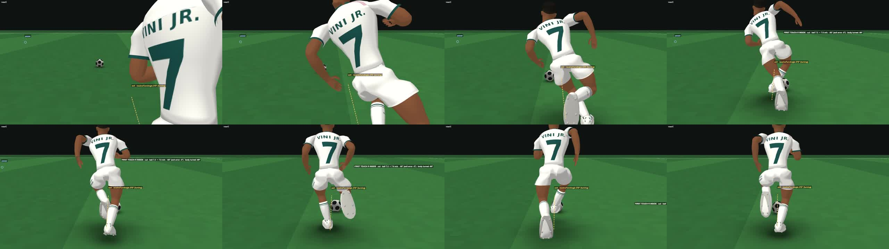
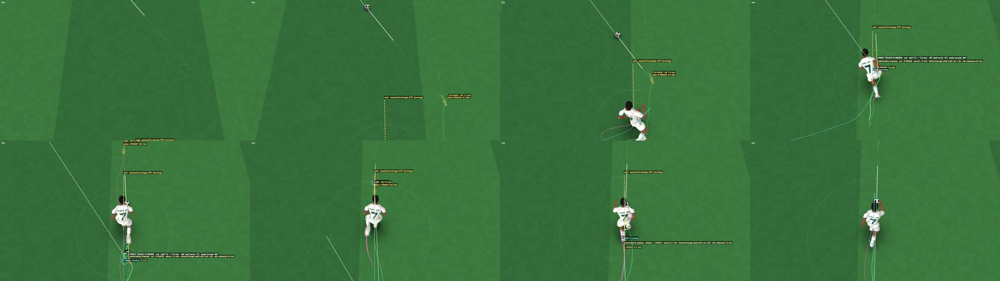
Matrix — 714 runs (238 situations × 3 seeds)
Seeds change the keyed execution draws and move the passer a few tenths of a metre, so the ball meets a different phase of the stride. A receive is a first touch before the pass has gone by. Clean: a receive, the new line within 2.5 s, the ball controlled at the end. Taken: the new line reached, but late or not controlled. Received: a receive, no new line. Recovered: the pass went by and was played later. Missed: no touch.
By receiveTurnAngle
| n | clean | taken | received | recovered | missed | |
|---|---|---|---|---|---|---|
| 0 | 120 | 77 | 4 | 10 | 6 | 23 |
| 45 | 21 | 15 | 0 | 2 | 2 | 2 |
| 89 | 42 | 16 | 2 | 6 | 2 | 16 |
| 90 | 132 | 56 | 7 | 24 | 7 | 38 |
| 120 | 21 | 7 | 0 | 7 | 1 | 6 |
| 135 | 21 | 7 | 0 | 9 | 1 | 4 |
| 180 | 120 | 25 | 6 | 44 | 8 | 37 |
| 225 | 21 | 2 | 0 | 9 | 1 | 9 |
| 240 | 21 | 4 | 1 | 5 | 1 | 10 |
| 270 | 132 | 48 | 5 | 31 | 8 | 40 |
| 271 | 42 | 12 | 0 | 8 | 1 | 21 |
| 315 | 21 | 10 | 2 | 2 | 0 | 7 |
By pass direction (where the pass comes from)
| n | clean | taken | received | recovered | missed | |
|---|---|---|---|---|---|---|
| F | 174 | 93 | 10 | 48 | 6 | 17 |
| FL | 48 | 17 | 2 | 8 | 0 | 21 |
| FR | 48 | 14 | 0 | 7 | 0 | 27 |
| L | 174 | 62 | 7 | 30 | 14 | 61 |
| R | 174 | 73 | 5 | 30 | 9 | 57 |
| RL | 48 | 8 | 2 | 19 | 9 | 10 |
| RR | 48 | 12 | 1 | 15 | 0 | 20 |
By receiver
| n | clean | taken | received | recovered | missed | |
|---|---|---|---|---|---|---|
| STAND | 108 | 47 | 6 | 21 | 1 | 33 |
| JOG | 174 | 58 | 6 | 25 | 8 | 77 |
| RUN | 324 | 124 | 9 | 83 | 19 | 89 |
| FAST | 108 | 50 | 6 | 28 | 10 | 14 |
By pass strength
| n | clean | taken | received | recovered | missed | |
|---|---|---|---|---|---|---|
| SOFT | 144 | 87 | 11 | 27 | 8 | 11 |
| MED | 426 | 158 | 11 | 97 | 21 | 139 |
| FIRM | 144 | 34 | 5 | 33 | 9 | 63 |
By class
| n | clean | taken | received | recovered | missed | |
|---|---|---|---|---|---|---|
| ordinary | 246 | 130 | 8 | 28 | 11 | 69 |
| turning | 468 | 149 | 19 | 129 | 27 | 144 |
- Turning receives: the turn was released before contact in 168 of 297 real turning receives, a median 0.31 s early; the body had turned a median 16.05° at the contact. In 90 of 149 clean ones the first touch itself put the ball on the exit.
- 180°: 25 clean + 6 taken of 120; 24 of the clean ones turn with the first touch; new line 0.504 s after it (median).
- Clean turning receives: 95 to the right, 54 to the left. Both feet are chosen by geometry in both directions.
- First-touch families (labels read from geometry, no scripted moves): laces 49 · let-run 15 · across-body 37 · through-stance 35 · front 171 · outside-foot 134 · inside-wrap 22.
- Handoff into DRIBBLE-V1: 0 double touches; same-foot re-contacts in 6 runs; no acceleration beyond TURN-1.2's own stance impulses.
- Failures: 44 heavy first touches; 162 balls deflected off the body before any planned touch; 182 lost after the first touch; 0 kernel faults.
Determinism, performance, DRIBBLE-V1
- Node replay 20/20 identical. Chrome / Node: decisions 20/20 identical; state bit-identical in 7/20, and otherwise differs only in the last bits (as in DRIBBLE-V1).
- Matched seeds: first-touch execution draws are keyed by seed, player, tick and foot — 429/429 identical for the same contact in two builds, 162/162 different across seeds.
- CPU (one process, idle machine, 20 cases): receive phase 816.4 ms per simulated second; after the handoff 128.2 ms/s; whole 4 s case 415.6 ms/s; worst step 65.2 ms (garbage collection; planning stays inside the frozen ≈ 14 ms per-tick budget).
- DRIBBLE-V1: frozen files byte-identical to the tag; 60/60 DRIBBLE-1.5 runs identical before and after receives in the same process; 48/48 match its evidence of record; the frozen parameter object is unchanged.
Limitations
- frozen dribble contact/launch model rejects most launches for hard incoming balls (geometry of the impulse normal; follow-through floor after the warp-slowed receiving foot)
- TURN-1.2 has no walk/stand/open stance (2.5 m/s floor)
- approach slows fast runners ~2 m/s before ordinary receives
- receive-phase CPU ~0.8 s per simulated second, GC pauses
- left turns weaker than right (54 vs 95 clean)
For the attribute layer: Ball Control on first-touch execution, weak foot, reach / agility, reactions, pressure and fatigue.